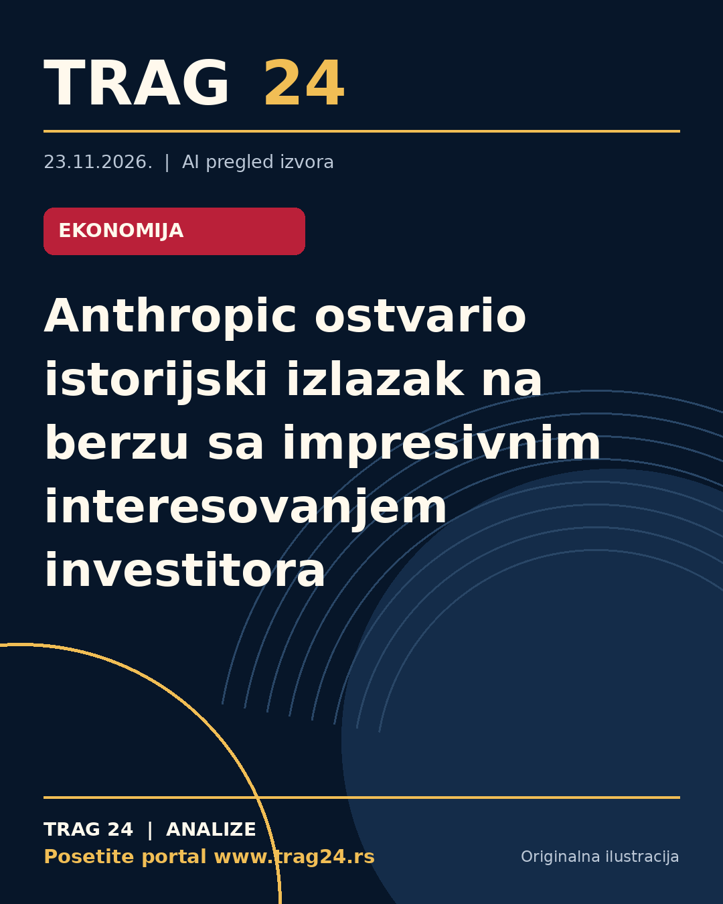

Anthropic ostvario istorijski izlazak na berzu sa impresivnim interesovanjem investitora

ŠTA SE DOGODILO
Kompanija Anthropic, poznata po razvoju AI četbota Claude, ostvarila je jedan od najvećih izlazaka na berzu u istoriji, sa inicijalnom javnom ponudom akcija (IPO) pre nego što je svoj izlazak obavio i konkurent OpenAI. IPO Anthropic-a zabeležio je znatno veće interesovanje nego što se očekivalo, a kompanija je prikupila rekordnih 81,3 milijarde dolara kapitala.
HRONOLOGIJA
Anthropic je najavio IPO sa ciljanom inicijalnom cenom akcija između 70 i 78 dolara. Konačna cena ponuđenih akcija bila je 83 dolara, iznad planiranog raspona. Nakon izlaska na berzu, cena akcije je na otvaranju porasla na 111,50 dolara, što je rast od oko 34%. Tokom prvog dana trgovanja dostigla je maksimum od 115,10 dolara, da bi zatvaranje završila na nivou od 97,17 dolara, što predstavlja povećanje od 17,1% u odnosu na IPO cenu. Nakon inicijalne korekcije cene nastavio se trend rasta.
ŠTA NAVODE IZVORI
Svi tri izvora (Blic, Danas, N1) ističu da je IPO Anthropic-a privukao jedan od najznačajnijih nivoa interesovanja investitora u istoriji. Potražnja je bila kolektivno velika, što je rezultiralo povećanjem ponuđenog broja akcija i prikupljanjem rekordnog kapitala. Izvori takođe navode da je interesovanje za AI sektor i dalje visoko, uprkos prethodnom padu u tom segmentu tržišta, i da Anthropic sada predstavlja jedan od glavnih interesantnih subjekata za investitore, naročito u poređenju sa drugim ključnim akterima poput OpenAI ili kompanije NVIDIA, koja se u poslednje vreme suočava sa kontroverzama.
ŠTA JE POTVRĐENO
Potvrđeno je da je konačna IPO cena akcija Anthropic-a 83 dolara, što je iznad početnog cenovnog raspona. Kompanija je prikupila 81,3 milijarde dolara tokom IPO procesa. Trgovanje akcijama Anthropic-a započelo je porastom cene, dostigavši i preko 115 dolara, a zatim blagi pad zatvaranjem dana na 97,17 dolara. Takođe je potvrđeno da je Claude, AI četbot ove kompanije, već popularan među korisnicima, uključujući i u Srbiji. Takođe je potvrđeno da se IPO dogodio pre planiranog izlaska OpenAI-ja na berzu.
ŠTA NIJE POTVRĐENO
Nema informacija o tačnom datumu IPO, detaljima oko vlasničke strukture nakon izlaska na berzu ili o mogućem uticaju tih dešavanja na globalnu regulativu ili na performanse konkurentskih kompanija u narednom periodu. Takođe nije potvrđeno koliko je tačno akcija ponuđeno i koliko je investitora učestvovalo individualno. Nema podataka o potencijalnim rizicima za investitore u ovom trenutku, niti o budućim planovima kompanije Anthropic nakon izlaska na berzu.
ŠTA OSTАJE OTVORENO: Ostaje otvoreno kako će tržište dalje reagovati na cene akcija Anthropica u dužem roku, kao i kakav će uticaj imati eventualni izlazak OpenAI-ja na berzu. Takođe nije poznato u kojoj meri će problemi drugih velikih AI i tehnoloških kompanija, poput NVIDIA-e, uticati na povratak poverenja investitora. Pitanja ostaju i u pogledu daljeg razvoja AI sektora i eventualnih regulacija koje bi mogle nastupiti u skorijoj budućnosti.
Izvori
- https://www.blic.rs/biznis/vesti/anthropicov-istorijski-izlazak-na-berzu-investitori-pozurili-da-uloze-nije-kasno-i-za/zs62pzj
- https://www.danas.rs/vesti/ekonomija/anthropicov-istorijski-izlazak-na-berzu-investitori-pozurili-da-uloze-nije-kasno-i-za-ostale/
- https://n1info.rs/biznis/anthropicov-istorijski-izlazak-na-berzu-investitori-pozurili-da-uloze-nije-kasno-i-za-ostale/
Ova analiza je pripremljena uz pomoć veštačke inteligencije na osnovu javno dostupnih izvora. Navodi izvora nisu nužno nezavisno potvrđeni.